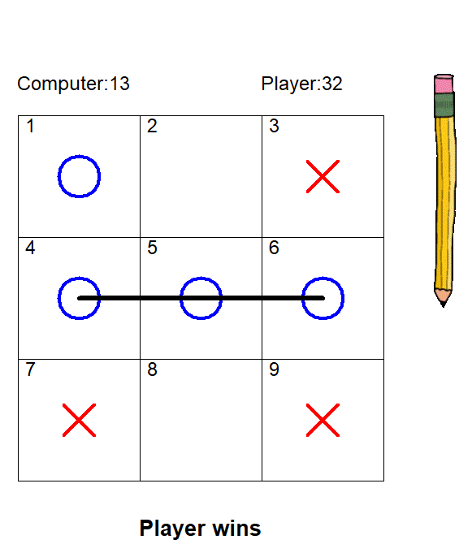

This is my 1.1.9 project, Turtle Run. Based off of the mobile games Subway Surfers and Temple Run.
1.2.5 Project Tic Tac Toe

This is my 1.2.5 project Tic Tac Toe in Python. It ended up using a lot more lines of code than I thought Tic Tac Toe would take but we still finished the project well within time.
My only complaint or dissatisfaction with the project is that I couldn't end up getting the Xs to draw exactly in the order that I wanted them to (started in the center of the X instead of top left or right like most people would draw an X).